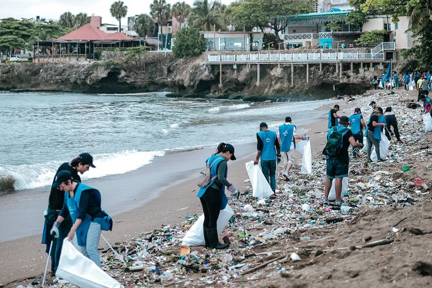
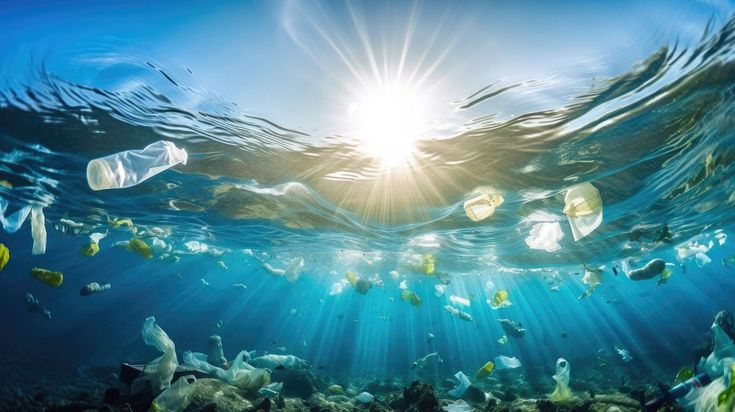
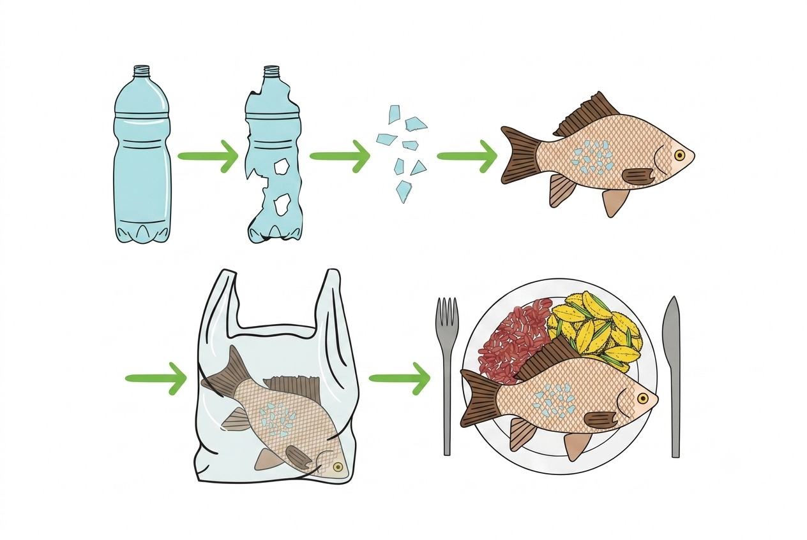

Ruby Rose
Origen: Brasileña | Precio: Accesible
Registro ANMAT vigente. Línea amplia con varias opciones sin ingredientes sintéticos de preocupación. Revisá siempre la etiqueta del producto.
Líneas a mirar: Labiales, Bases, Sombras
Lo que usamos en nuestra piel termina en el agua,
conocé su impacto y cómo elegir mejor
Buscá en Google el nombre de tu producto + "ingredientes" y pegalos acá, te ayudamos a identificar si contiene microplásticos!
Exfoliantes con microesferas, glitter cosmético, bases con "smooth finish"
Depende la fórmula:Rímel, sombras en crema, contornos líquidos
Generalmente seguros:Exfoliantes con azúcar/sal, maquillaje en polvo mineral, labiales con ceras naturales
Gran parte de los residuos que generamos a diario — plásticos, envases de cosméticos, microesferas de productos de cuidado personal — terminan en ríos, arroyos y el mar. Al degradarse, forman partículas diminutas llamadas microplásticos que se filtran en el agua y afectan a toda la cadena alimentaria.
Argentina no está exenta: nuestros cuerpos de agua costeros están bajo una presión creciente. Podés conocer el estado actual visitando el Organismo Provincial para el Desarrollo Sostenible (OPDS) .

Voluntarios en acción: limpiar las costas es una de las formas más directas de reducir el impacto
Muchos cosméticos convencionales — bases, exfoliantes, rímel, labiales — contienen microesferas de polietileno, silicona y otros polímeros sintéticos. Estos ingredientes son, técnicamente, microplásticos.
Al lavar nuestro rostro o ducharnos, esas partículas bajan por el desagüe. Las plantas de tratamiento de agua no están diseñadas para filtrarlas completamente, y terminan en ríos, lagos y el océano.
Usá nuestro verificador para saber si tu producto contiene microplásticos, o buscá en la etiqueta términos como Polyethylene, Nylon-12, Polypropylene, Acrylates Copolymer (microplásticos frecuentes en cosméticos).

Lo que tiramos por el desagüe llega hasta acá
Sí. Los microplásticos absorben sustancias tóxicas del agua y son ingeridos por peces, mariscos y otros organismos acuáticos. Al consumirlos, esas sustancias pueden llegar a nuestro organismo.
Los comercios y consumidores tienen un rol clave: reducir el uso de cosméticos con microplásticos es una de las acciones más efectivas para frenar esta cadena de contaminación.

En 2050 habrá más plástico que peces en los océanos
Los microplásticos ingeridos por peces y mariscos llegan a nuestra mesa. Se han detectado en agua de canilla, sal marina y mariscos de consumo masivo.
Partículas de cosméticos con microplásticos pueden penetrar la piel o ser inhaladas. Algunas investigaciones vinculan la exposición crónica con disrupciones hormonales.
El agua potable puede contener microplásticos que no son eliminados por los sistemas de tratamiento convencionales. Un problema silencioso de salud pública.
La contaminación afecta directamente a comercios y comunidades costeras. Playas con basura plástica generan pérdidas millonarias en turismo cada año.
Estas marcas disponibles en Argentina cuentan con registro ANMAT y ofrecen líneas sin microplásticos o con compromisos de formulación más limpia. Siempre verificá la etiqueta del producto específico.
Origen: Brasileña | Precio: Accesible
Registro ANMAT vigente. Línea amplia con varias opciones sin ingredientes sintéticos de preocupación. Revisá siempre la etiqueta del producto.
Líneas a mirar: Labiales, Bases, Sombras
Origen: Nacional | Precio: Accesible
Marca argentina formulada para pieles latinoamericanas. Popular en farmacias, con productos libres de parabenos en varias líneas.
Líneas a mirar: Bases, Correctores, Polvo compacto
Origen: Colombiana | Precio: Moderado
Clásica en Argentina con décadas de presencia. Registro ANMAT y cierto compromiso en la reducción de ingredientes de alta preocupación.
Líneas a mirar: Labiales, Delineadores
Origen: Internacional | Precio: Moderado
Productos habilitados por ANMAT. Su casa matriz tiene compromisos públicos de eliminar microplásticos de su formulación para 2030.
Líneas a mirar: Fit Me, Sky High
Origen: Brasileña | Precio: Muy económico
Amplia gama habilitada en Argentina. Sus precios accesibles la hacen una opción para consumidores que buscan alternativas económicas certificadas.
Líneas a mirar: Labiales, Brochas
Origen: Importada | Precio: Muy económico
Habilitaciones ANMAT vigentes. Revisá ingredientes producto a producto, especialmente en exfoliantes y glitter (pueden contener partículas plásticas).
Líneas a mirar: Paletas de sombras, Iluminadores
También hay marcas como [insertar marcas] que trabajan para disminuir su impacto ambiental a futuro.